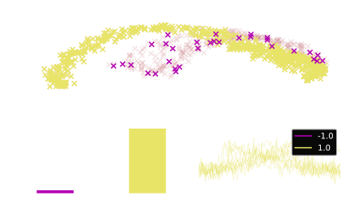
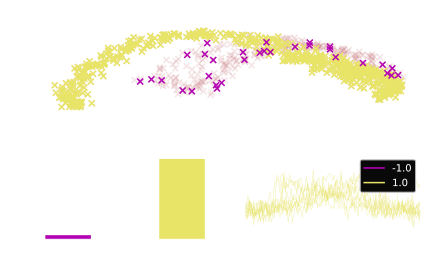

Outlier detection benchmarks#
Warning
The datasets.outlier module optionally requires the package networkx to generate outliers for multi-class
problems using emmott_labeler. We can
install the packages using pip:
pip install networkx
Wildboar is bundled with support for outlier detection. The primary focus is on
detecting samples that deviate from what is expected, i.e., outlier samples, as
opposed to detecting deviating patterns or time points. Since there are no good
benchmark datasets for outlier detection (except for wildboar/outlier,
which we construct using the emmott_outliers), we
support the constructing benchmark outlier datasets from traditional
classification tasks.
Minority labeler#
Perhaps the simplest approach to generate outliers implemented in Wildboar is
the minority_labeler. The minority labeler selects a
small fraction, specified as n_outliers, of the minority class as the outlier
samples:
>>> from wildboar.datasets.outlier import minority_labeler
>>> x_outlier, y_outlier = minority_outliers(x, y, n_outliers=0.05)
 
Majority labeler#
Another equally simple approach to generate outliers implemented in Wildboar is
the majority_labeler. The majority labeler selects a
small fraction, specified as n_outliers, of the majority class as the outlier
samples:
>>> from wildboar.datasets.outlier import majority_labeler
>>> x_outlier, y_outlier = majority_labeler(x, y, n_outliers=0.05)
Emmott labeler#
Wildboar implements a more sophisticated approach to generate outliers, first
published by Emmott et.al (2013) [1]. Wildboar implements the default
version, but, by default, converts the the time series to an interval
representation using transform.IntervalTransform for both the confusion
and difficulty estimator. The default confusion estimator is a
sklearn.ensemble.RandomForestClassifier and the default
difficulty estimator is a kernel logistic regression model with RBF-kernel. The
emmott_outliers can construct synthetic outliers from
both binary and multi-class problems, and allows the user to specify a desired
difficulty, i.e., the separation between inliers and outliers. By default, it
returns a tight cluster of the simplest outliers:
>>> from wildboar.datasets.outliers import emmott_labeler
>>> x_outlier, y_outlier = emmott_labeler(
... x,
... y,
... n_outlier=0.05,
... variation="tight" # default
... difficulty="simplest" # default
... )
but we can request a dispersed collection of the most difficult samples:
>>> from wildboar.datasets.outliers import emmott_labeler
>>> x_outlier, y_outlier = emmott_labeler(
... x,
... y,
... n_outlier=0.05,
... variation="dispersed"
... difficulty="hardest"
... )
Note
To generate outliers for multiclass problems, we must install the package
networkx.
The emmott_labeler discretizes the difficulty scores
assigned by the difficulty estimator into n discrete bins determined by the
scale parameter. By default, the difficulty scores are assigned into
four bins according to the ranges [0, 0.16], [0.16, 0.3], [0.3,
0.5] and [0.5, 1.0] (scale=[0, 0.16, 0.3, 0.5]), but we can specify other
scales as either a list or an int. If we specify an integer, the difficulty
scores are quantized into scale percentiles, e.g., scale=4 results in the
ranges [0, 0.25, 0.5, 0.75]. We can then request outliers of specified
difficulty with the difficulty-parameter, e.g., difficulty=1 selects
samples with difficulty scores in the first quantile. We can also specify
multiple difficulties by passing a list, e.g., difficulty=[1, 4] selects the
simplest and the hardest outliers.